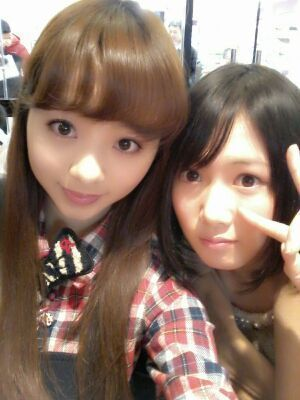
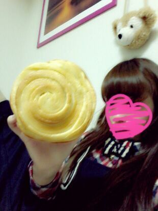

| 2013/01 27 Sun | パンっていくつでも食べれちゃう =・▽・=♪にや。 rotty |
ほっほーい )))
いぇーーーい ♪
今日もおはよう。
明日もおはよう。?
Rottyです ! !
そして せいらりん姫←(〃▽〃)笑

スタバのカウンター席で
撮ったよん♪
２人とも キャラメルフラペチーノ☆
ホイップ&ソース多目にしたのは
何気 初でした〃▽〃
ここんとこ ずっと
らりん♪といます ^^
昨日は 昼間はお互い違う用事が
あって、夕方からまたらりんと
一緒にいました (／・▽・)／
ふわぁ〜い(*´∇｀*)るんるん
渋谷で待ち合わせして
色々見てぇ〜
らりんの洋服選びぃ〜*・▽・*
楽しかったぁ〜
らりん優柔不断なの...>▽<
たくさん悩んで
買ったよねんっ(／*^▽^*)／
そのまま原宿へ
テチテチ...。
ヴォォオオ゛゛wwww ! !
なんぢゃこりゃーーー
セールやってんのう!?
セールやってんのう!!!
ファッ( ; ゜Д゜)! !
...
女のファッションに対する
戦欲は... すごいとです。
完全やられましたっ バタッ。
チーン。
とにかく、
一回店内に踏み出してしまったら
出るのに一苦労やわ(／~`)
想像してみてぇ〜?
後ろから押されるのっ )))
おとっとっと、
こけそうになりながら...
あっ、この服ちょっと
気になるかもっ
あっ でも あそこまで...
ぎゅっ ぎゅっ
来れたっ )))
店員さん「着てみますぅ〜*^^*?」
・・・
「この状況の中で着てみます?
ってかぁ〜 んー、せやなぁ〜
普通に考えて無理ですよ
店員しゃーん♪(((／>▽<)／」
脱出☆! !
とにかく セールで
人がすごかった話と、、、
昨日は 昼過ぎから
らりんと スタバで
１時間おしゃべりして
ななせ合流★☆★
３人で大きなスーパーに行って
色々見て
パン屋さんに行って帰りました♪
ってゆーのは、
らりんが
「まぢどこどこのパン屋さん
美味しいからっ〃▽〃
牛乳パン 本当美味しいから !
買って損しないよ ・▽・」
って昨日から言ってて
ぢゃあ明日そこ一緒に
行こーよ(／・▽・)／
ってなって、その
らりん超オススメ牛乳パンを
買って帰ってきたのっ♪
それがこれっ (^∧^)

めちゃおっきぃ〜い (*^^*)
渦渦渦〜〜＠＠
食前と食後に
ちゃんとらりんに
連絡いれたよ (*´▽`*)
食べかけ...こんな感じっ♪

ふんわふんわっ )))
もふもふしてた。
おっきいけど
美味しくて ペロッと食べれたよ
(*^~^*)
あと イチヂクのパンも買った♪
らりんも プラス
あんパンとカレーパン買ってた^^
ななせも プラス
ジャガイモとほうれん草のパン
買ってたよん♪
とゆうかね、
らりんがカレーパンを
人生でまだ食べたことない。
ってことが
まひろからすると
衝撃だったよw
それを ななせに言ったら
「なあも 最近初めて食べたでー
カレーパンの美味しさに
やっときずいた。」
え゛ww ◎◇◎
お二人そろって、、
はっはっ初めて食べる &
初めて美味しさにきずいた。
おう。
...
ろってぃーたまげた (((・▽・)／♪
ろってぃーカレーパン大好き。
初カレーパンの感想
聞こおっと ♪。
ではでは、皆しゃん
大好きよん〃ω〃)／
のし。rotty
コメント(179)
2013/01/27 00:36